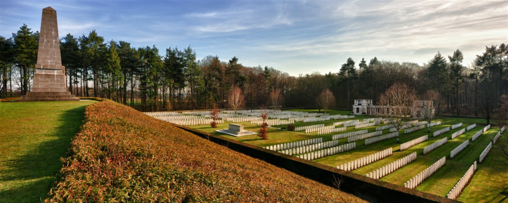
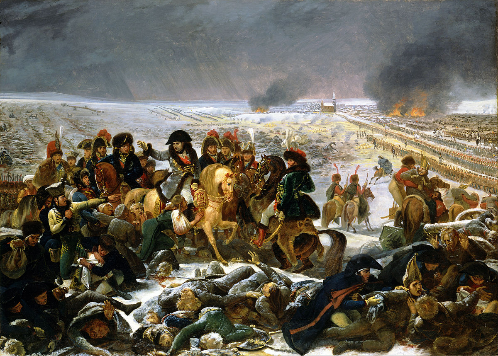
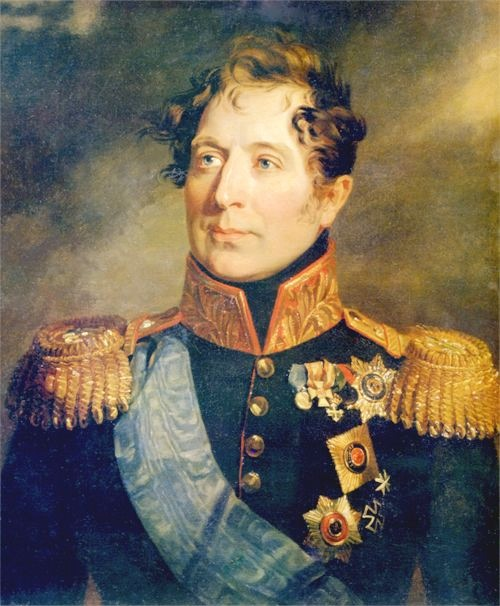
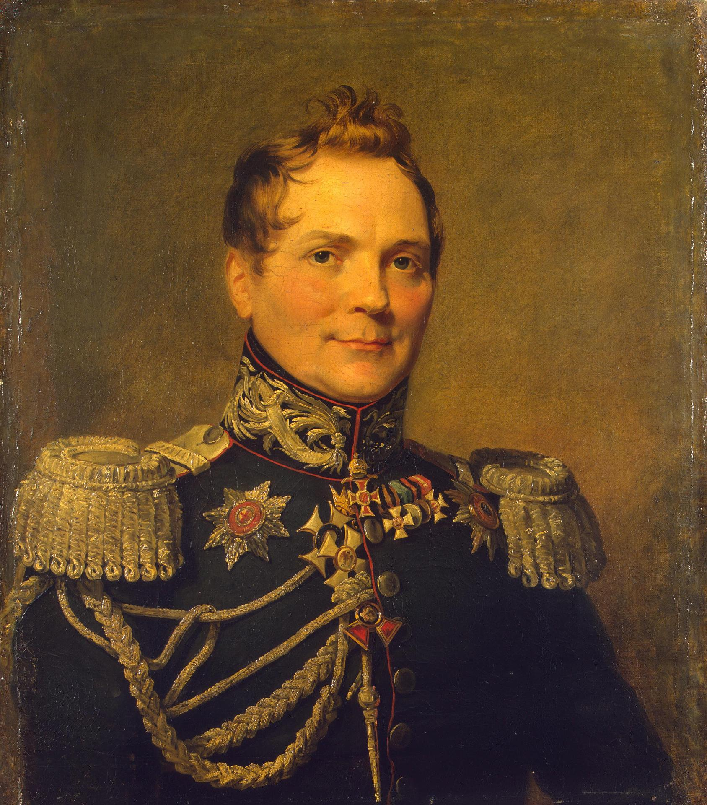

쿠투조프의 고민 - 보로디노(Borodino)로 가는 길
게시: 2020-07-20T06:30:26+09:00
쿠투조프는 왜 전임자인 바클레이가 온 나라로부터 욕을 먹었고, 왜 자신이 그 후임자로 지명되었는지를 잘 알고 있었습니다. 그의 사명은 궁극적으로야 나폴레옹을 무찌르는 것이었습니다만 1차 목표는 모스크바를 지키는 것이었고, 그보다 더 중요한 것은 죽이 되든 밥이 되든 일단 싸워야 한다는 것이었습니다. 여기서 또 후퇴를 했다가는 자신도 바클레이와 다를 바가 없게 되는 셈이었으니까요. 그런데 정치적 상황은 그렇다치고, 군사적 상황은 그렇게 간단하지가 않았습니다. 전쟁에서 수많은 병사들의 목숨과 엄청난 물자와 비용을 희생시켜가며 싸우는 이유는 승리를 위해서입니다. 그런데 승리하지 못할 것을 뻔히 알면서도 싸운다는 것은 무능을 떠나 국가에 대한 반역 행위에 가까운 일입니다. 쿠투조프가 나폴레옹과 싸우려고 보니, 여태까지 왜 바클레이가 후퇴만 죽어라고 했는지 (쿠투조프의 오른쪽 눈 생각을 하면 이건 비유 같으면서도 비유가 아닌데) 한눈에 알아볼 수 있었습니다. 일단 러시아군 숫자는 적은데 나폴레옹의 그랑다르메 숫자는 많았습니다. 당시의 군사 기술로는, 결국 전투의 승부는 몇자루의 총검을 동원할 수 있느냐 하는 것에서 결정되었는데, 확실히 프랑스군이 더 많았거든요. 당시 프랑스군과 러시아군의 정확한 숫자에 대해서는 아무도 몰랐습니다. 이건 당시의 정보 통신 기술의 문제이기도 했지만 부대 준비 태세에 대한 양측 장교들의 허위과장 보고 때문이기도 했는데, 아무튼 나폴레옹과 쿠투조프 본인들도 각자 실제 가용 병력이 얼마인지 정확하게는 몰랐습니다. 그럼에도 불구하고, 쿠투조프는 대략 프랑스군의 현재 병력이 대략 16만5천이라고 평가하고 있었고, 러시아군은 대략 12만 정도라고 보았습니다. 이건 불공평한 싸움이었고, 지휘관이 음흉한 독일인이냐 진짜배기 러시아인이냐의 문제가 아니었습니다. 어쨌거나 싸우러 나온 것이니 싸우기는 싸워야 하는데, 이런 불리한 상황 속에서 어떤 싸움을 어디서 벌이느냐도 중요한 문제였습니다. 당시까지의 유럽에서의 주요 해전은 대양 한복판이 아니라 모두 주요 항구 근처에서 벌어졌습니다. 이유는 넓은 바다에서 서로 상대 함대를 찾기가 어렵기 때문이었지요. 반면에 당시 유럽 국가간의 지상전은 요새 도시에서의 포위전이 아니라면 대부분 탁 트인 벌판에서 벌어졌습니다. 접촉 신관에 의한 무시무시한 위력의 폭발탄과 자동화기가 없던 시절, 보병과 기병들끼리 대판 싸움질을 하려면 넓은 평원이 필요했기 때문입니다. 당시 싸움은 전열보병들이 대오를 짜고 거북이처럼 전진하고, 양측의 포병들이 상대방의 전열보병들을 볼링핀처럼 쓰러뜨리고, 기병들이 보병 대오 사이의 빈틈을 비집고 바람처럼 들어가서 칼탕을 먹이는 것이 전형적인 모습이었습니다. 유능한 지휘관이 있다면 좌익 또는 우익에서 화려한 기동전을 펼쳐서 적군을 쌈싸먹으려고 들었고, 간혹 중앙을 돌파하여 적군을 양분하고 각개격파를 하기도 했습니다. 그리고 어느 한쪽이 꼭 지키고자 하는 도시나 지방이 있다면 그 근처의 평야지대에서 싸워야 했는데, 그러다보니 유럽에서는 몇 백년의 시간 차이를 두고 같은 장소에서 여러번 전투가 벌어지기도 했습니다. 가령 벨기에를 두고 '유럽의 전장'이라고 부르는 이유가 다 있습니다. 프랑스와 영국, 독일 사이에 낀 위치에다 부유한 도시와 항구들이 많고 온 나라가 평야지대이다 보니 벨기에에서 싸움이 자주 벌어졌던 것이지요. 러시아의 경우는 대부분이 탁 트인 벌판이라서 적절한 싸움터 걱정을 하지 않아도 되었습니다.

(벨기에 부트(Buttes)에 있는 제1차 세계대전 당시 영국군 전사들의 묘지입니다.)
하지만 그런 탁 트인 벌판에서 정정당당하게 기동전을 벌이는 것이 과연 러시아군에게 유리한가에 대해서는 다들 갸우뚱할 수 밖에 없었습니다. 대부분 농노 생활을 하다가 재수없게 마을 대표 병정으로 뽑혀서 징집된 러시아군 병사들의 체념에 가까운 우직함은 당시 유럽 군대 중에서는 영국군에 가까운 면이 있었습니다. 영국군은 자발적으로 입대한 모병제 군대였고 또 영국은 당시 유럽의 가장 진보된 선진국이라서 영국군과 러시아군 병사들이 서로 비슷했다고 하면 좀 뜻 밖이라고 생각하시겠지만 사실이었습니다. 러시아군이나 영국군이나 기본적으로 늙어서 병정으로서는 쓸모가 없어질 때까지 사실상 평생 복무가 기본이었고, 사회 가장 밑바닥 출신들이라서 병사들 대부분이 문맹이었으며, 장교들은 그런 병사들을 무자비한 규율과 채찍질로 짐승처럼 다루었습니다. 게다가 많은 장교들이 돈과 신분으로 장교직을 얻었기 때문에 매우 무능했다는 점도 비슷했습니다. 그러다보니, 시작은 매우 달랐지만 새의 날개나 박쥐의 날개나 결과적인 기능면에서는 비슷한 결과를 낳은 것처럼, 러시아군과 영국군은 성능(?)면에서도 비슷한 결과를 냈습니다. 즉, 평원에서의 기동전보다는 요새나 고지 등에서의 방어전에서 탁월한 결과를 냈던 것입니다. 생각해보면 나폴레옹의 프랑스군에 맞서서 러시아군이 싸운 것은 (워낙 특이한 결과였던 아우스테를리츠를 제외하면) 제4차 대불동맹 전쟁에서 싸웠던 풀투스크(Pultusk) 전투, 아일라우(Eylau) 전투, 프리틀란드(Friedland) 전투 정도인데, 러시아군이 언덕에 의지하여 방어전을 펼쳤던 풀투스크와 아일라우에서는 러시아가 전술적 승리를 가져갔지만 고도의 기동전을 펼쳤던 프리틀란트 전투에서는 그야말로 참패를 겪고 제4차 대불동맹 전쟁의 종지부를 찍은 바 있었습니다. 영국군도 웰링턴 장군이 구사할 줄 아는 유일한 전술이 '언덕에서 존버하기' 밖에 없을 정도로, 죽어라고 언덕을 찾아 방어전만 펼쳤고 또 그 결과 재미가 쏠쏠했습니다.

(1807년 아일라우 전투입니다. 많은 사람들이 이 전투를 황제가 된 이후 나폴레옹의 사실상 첫 패배라고 말합니다. 단지 전투 현장에 남은 것이 프랑스군이었기 때문에 나폴레옹은 자신이 승자라고 주장했지요. 이렇게 나폴레옹을 궁지에 몰아넣은 러시아군 지휘관이 베니히센이었으니, 베니히센은 자신이 1812년 전쟁에서 총사령관이 되어야 한다고 생각했던 것이 과히 틀린 것은 아니었습니다. 당시 바클레이는 베니히센의 수하 장군 중 하나일 뿐이었습니다.)
특히 지금의 경우처럼 프랑스군이 러시아군보다 수적 우세를 가진 현실을 고려하면, 쿠투조프도 평야에서의 기동전보다는 언덕이든 요새든 뭔가에 의지하여 방어전을 펼쳐야 했습니다. 바클레이도 똑같은 생각으로 뭔가 방어물을 찾아 계속 후퇴를 해왔던 것인데, 쿠투조프가 러시아군에 합류했을 때의 위치도 바클레이가 세심하게 고려하여 찾아낸 몇 안되는 방어 적합 지형 중 하나였습니다. 그가 선정한 차레보(Tsarevo-Zaimishche, 짜르가 물을 대는 곳이라는 뜻이랍니다)의 지형은 쿠투조프가 보기에도 방어전을 펼치기에 꽤 그럴싸 했습니다. 심지어 바클레이가 하는 말이라면 무조건 반대하던 바그라티온조차도 찬성한 곳이었으니까요. 게다가 더 이상 물러설 곳도 없었습니다. 이제 모스크바까지의 거리도 얼마 남지 않았으니, 여기서 더 물러나면 정말 모스크바에서 시가전을 벌일 판국이었습니다. 그러나 문제는 역시 그럼에도 불구하고 프랑스군과 싸우면 질 것 같다는 것이었습니다. 병력 차이가 너무 났습니다. 그렇다고 여기서 더 후퇴한다고 병력 문제가 해결되나요 ? 해결될 수 있었습니다. 쿠투조프는 비록 게으를지언정, 멍청한 사람이 아니었습니다. 그는 바클레이가 여태까지 취해온 작전이 매우 효율적으로 나폴레옹의 그랑다르메를 약화시켰다는 것을 파악했습니다. 여기서 조금이라도 후퇴할 수록, 시간과 거리는 분명히 러시아 편을 들어주게 되어 있었습니다. 쿠투조프 본인이 모스크바 시장 로스톱친에게 편지를 써보내며 '보급품과 함께 곧 벌어질 전투에서 발생할 부상자들을 실어나를 수레와 말 수백대를 보내달라'고 요청할 정도로, 러시아군은 프랑스군보다 보급면에서 확실히 우위에 있었고, 후퇴하면 할 수록 러시아군에게는 유리하고 프랑스군에게는 불리해졌습니다. 또한 밀로라도비치(Mikhail Andreyevich Miloradovich)가 1만7천의 농민병들을 징집하여 훈련시킨 뒤 데려오고 있었습니다. 급조된 농민병들이 얼마나 큰 도움이 될 지는 의문이었지만, 아무튼 그 농민병들과 합류한 뒤에 싸우자면 여기서 더 물러나야 했습니다.

(밀로라도비치(Mikhail Andreyevich Miloradovich)입니다. 그는 상트 페체르부르그 출신이지만 세르비아 계열 귀족이었습니다. 그는 오스만 투르크와의 전쟁에서 활약할 때 바그라티온과 심각한 불화를 겪었고, 그것이 간접적 원인이 되어 1810년 경에 군을 떠났었습니다. 나폴레옹의 러시아 침공 때 다시 소집되었습니다. 그는 평생 결혼 하지 않았는데, 대신 상트 페체르부르그 극단의 여배우들과 난잡한 사생활을 가졌다고 합니다.) 결국 쿠투조프가 러시아군 총사령관으로 취임한 후 취한 첫 행동은 바클레이가 여태까지 해온 것과 동일한 것, 즉 후퇴였습니다. 문제는 어디로 후퇴하느냐 하는 것이었는데, 바클레이는 그자츠크(Gzhatsk) 인근 지역을 제시했으나 베니히센은 그 지형을 마음에 들지 않았습니다. 결국 쿠투조프는 더 멀리 후퇴하기로 했고, 제1군 병참감이던 30대의 젊은 톨(Karl Wilhelm von Toll)에게 먼저 말을 달려 적절한 싸움터를 찾도록 지시했습니다. 그리고 톨은 곧 적절한 지역을 찾았습니다. 어떤 마을이 위치한 지역이었는데, 톨이 그 마을 이름을 물어보니 지역 주민은 '보로디노'(Borodino)라고 대답했습니다.

(톨(Karl Wilhelm von Toll)입니다. 그는 에스토니아 귀족으로서, 그의 조상은 스웨덴에서 왔지만 사실 그 선대는 네덜란드 가문이었습니다. 어쨌거나 톨은 러시아군 내에서 미움을 받던 소위 '독일인'들 중 하나였지만 그는 군 생활 시작을 바로 쿠투조프 밑에서 시작하는 행운을 누렸기 때문에 쿠투조프의 심복으로 분류되었습니다.)
Source : 1812 Napoleon's Fatal March on Moscow by Adam Zamoyski en.wikipedia.org/wiki/Mikhail_Miloradovich
en.wikipedia.org/wiki/Karl_Wilhelm_von_Toll